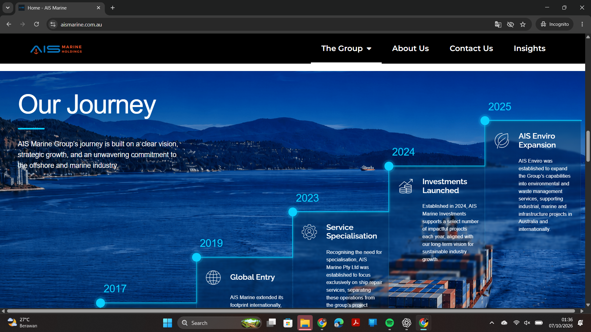

Project case study · Website maintenance & SEO
AIS Marine corporate website
Berperan dalam pemeliharaan, penyempurnaan, dan optimalisasi website AIS Marine untuk mendukung penyajian informasi perusahaan serta kebutuhan digital bisnis.
Peran dan kontribusi
Fokus pekerjaan mencakup pengelolaan website, perbaikan tampilan dan struktur konten, serta dukungan optimasi agar website lebih informatif dan mudah ditemukan.
- Menyempurnakan section Our Journey melalui penataan struktur konten, hierarki informasi, dan tampilan visual.
- Mengembangkan halaman Insights sebagai ruang publikasi artikel dan informasi perusahaan.
- Mendukung strategi SEO off-page melalui pengelolaan backlink untuk memperkuat visibilitas dan otoritas domain.
- Melakukan troubleshooting dan pemulihan operasional website setelah insiden phishing.
Bukti visual menampilkan section Our Journey yang dikerjakan pada website AIS Marine. Klik gambar untuk membukanya dalam ukuran penuh.